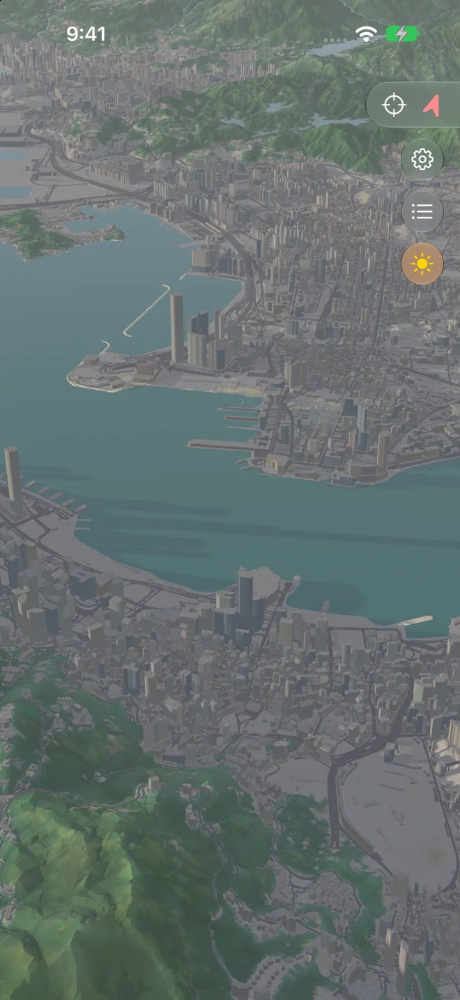
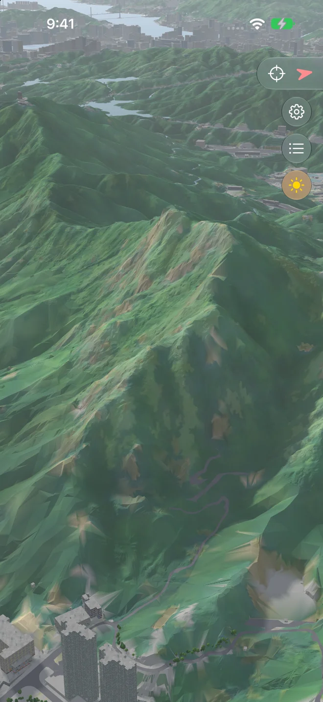
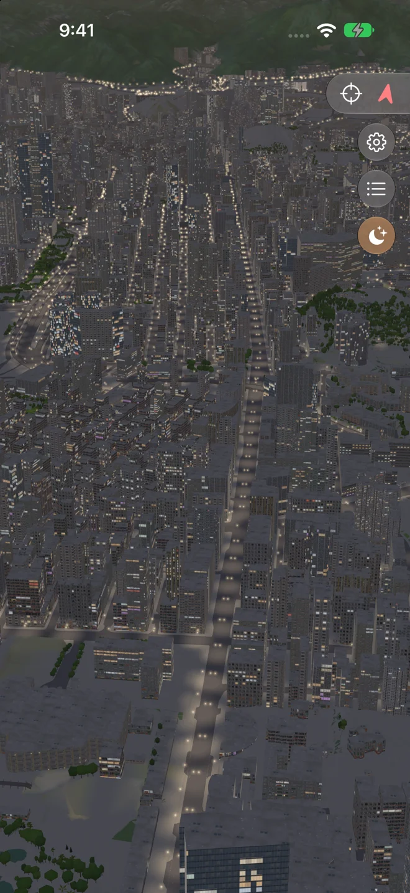
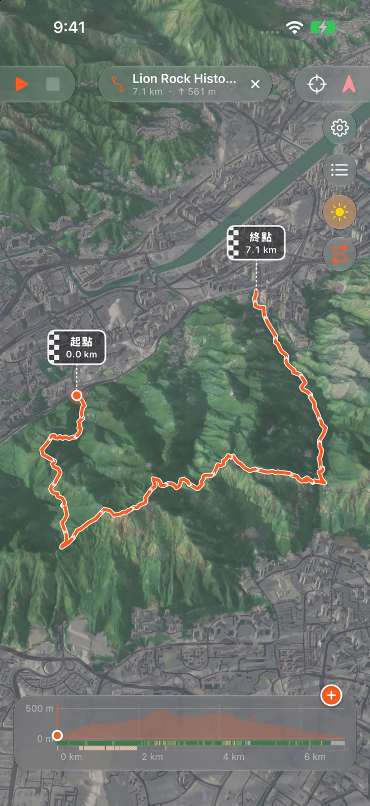
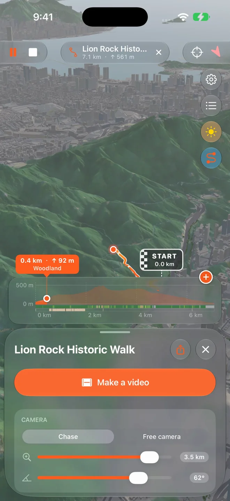

Hong Kong Island港島山上
From the hills to the harbour.由山上，飛向維港。
Begin above Hong Kong Island, using the latest map pack.用最新地圖包，由港島山上展開旅程。
Explore the city and its hills, relive a GPX trail, and turn the journey into a film. You choose when to fly.探索城市與山野，重溫 GPX 路線，把旅程製成影片。何時起飛，由你決定。
iPhone with iOS 26 or later · Android 10 or later.
iPhone version 1.0 is available now. Android is a closed test.需要 iOS 26 或以上的 iPhone，或 Android 10 或以上裝置。
iPhone 1.0 現已上架；Android 現正招募封測用家。
Hong Kong Island港島山上
Begin above Hong Kong Island, using the latest map pack.用最新地圖包，由港島山上展開旅程。
Victoria Harbour維多利亞港
Descend towards the Kowloon peninsula.向九龍半島飛去，逐步降低高度。
Kowloon九龍街道
Follow the centre of the road through city lights and simulated traffic.沿車路中央低飛，穿過夜色中的建築、街燈與模擬車流。
Above Kowloon九龍上空
Accelerate out of the street and climb with Lion Rock in view.穿過街道後加速，望住獅子山逐步拉升。
Lion Rock獅子山
Continue over Lion Rock as the route comes into view.飛越獅子山，逐步展現路線。
All of Hong Kong全香港
Rise above the ridge as the trail fades, revealing Hong Kong after dark.越過山脊繼續升高，路線逐漸淡出，展現全港夜景。
Use the video player’s controls to start the flight.請使用影片播放器的控制項開始播放。



On iPhone, a fullscreen landscape preview sits beside Picture, Camera and Light settings. Android also adapts its studio to landscape.iPhone 橫向全螢幕預覽，與畫面、鏡頭、光線設定並排顯示。Android 的編輯器亦會配合橫向版面。
More flexible filming speeds for close-up views, with the preview and export following the same setting.近鏡製片速度更有彈性，預覽與輸出採用一致設定。
The map preloads ahead of route movement. On iPhone, video progress leaves Settings accessible even after the sheets close.地圖會隨路線移動提前預載。iPhone 關閉面板後，製片進度亦會避開設定按鈕。
A clean, stylised 3D model of the whole territory, from the Government's own survey data: buildings, flyovers, terrain, roads and their markings. Explore by panning, turning and tilting. 以政府測繪數據建成、簡潔立體的全港模型：大廈、天橋、地形、道路以至路面標記。以平移、旋轉和傾斜探索地圖。
From Lantau's peaks to Sai Kung's coast, in detail you can download once and keep.由大嶼山的山峰到西貢的海岸，詳細地圖下載一次就一直保存。
The real sun and shadows for any moment, haze by the season, and the sky as it is.任何時刻的真實日照與陰影、隨季節變化的煙霞，以及真實的天空。
Your place on the map, the way you face, and how sure the fix is. Used on your device.你在地圖上的位置、面向和定位準確度，只在你的裝置上使用。

As the sun goes down, windows light up across Kowloon, street lights glow along the roads, and the stars and planets come out where they really are. 日落之後，九龍的窗戶逐一亮起，街燈沿路發光，星星和行星在真實的位置出現。
From evening, going out by dawn.由黃昏亮起，到清晨前熄滅。
Thousands of stars and five planets.數千顆恆星與五大行星。
Open any GPX file — from your watch, a race, a friend's WhatsApp — and see it laid on the hills it climbs. 打開任何 GPX 檔案，無論來自手錶、比賽還是朋友的 WhatsApp，都會鋪在它攀越的山上。
Share a GPX to Peakline and it's there, kept once, ready to play.把 GPX 分享到 Peakline 就會出現，不會重複儲存，隨時播放。
The climb along the way, the surface — asphalt, steps, dirt — and the land around it.沿途的爬升、路面（柏油、樓梯、泥路）以及周圍的地貌。
Add a race's CPs on the elevation, rename them, and take them with the file when you share it.在高度圖上加入比賽檢查站、為它們改名，分享 GPX 時一併帶走。
Turn your trail into a flyover video in a few taps: the camera follows you up every ridge, the light runs from dawn to dusk, and your distance and climb count up as you go. 幾下就能把路線變成飛越影片：鏡頭跟著你攀上每道山脊，光線由清晨變到黃昏，距離和爬升隨之累計。

No account to make. No ads, no analytics, no tracking. Routes and videos are processed on your device; sharing and system backups are your choice. 不用註冊帳戶。沒有廣告、沒有分析工具、沒有追蹤。路線及影片在裝置上處理，分享與系統備份由你選擇。
Yes. The map is on your device: Yau Tsim Mong comes with the app, and the detailed map of all Hong Kong is a one-time download. Your location comes from GPS.可以。地圖儲存在你的裝置上：油尖旺隨 App 附送，全港詳細地圖只需下載一次。位置來自 GPS。
Peakline is for planning, reliving and sharing. Map data can be out of date, so don't rely on it alone where your safety depends on it: check the weather, carry a proper map and tell someone your route.Peakline 用於規劃、重溫和分享。地圖資料可能過時，在涉及安全的情況下切勿只依賴它：出發前留意天氣、帶備地圖，並告訴別人你的路線。
Buildings, terrain and roads come from the HKSAR Government's open data (Lands Department, through the CSDI Portal and DATA.GOV.HK); paths' surfaces and steps from OpenStreetMap contributors. The full credits are in the app.大廈、地形和道路來自香港特區政府的開放數據（地政總署，經空間數據共享平台及資料一線通）；路面及樓梯資料來自 OpenStreetMap 貢獻者。完整鳴謝見 App 內。
No account. Available purchases use your platform’s store account: App Store on iPhone or Google Play on Android. Restore eligible purchases in Settings using the same store account. Manage renewals in that store’s subscriptions settings.不需要帳戶。可購買項目經所用平台的商店帳戶處理：iPhone 使用 App Store，Android 使用 Google Play。以同一商店帳戶登入後，可在設定中恢復合資格購買；續期請在該商店的訂閱設定管理。
Yes. Join the Google Group, then opt in to the closed test with the same Google account used in Google Play. Follow the steps below. The iPhone app is available on the App Store.有。先加入 Google 群組，再以 Google Play 使用的同一個 Google 帳戶加入封測，步驟見下方。iPhone App 已在 App Store 上架。
Closed testing is open. Use the same Google account for all steps.封閉測試現已開放。以下步驟請用同一個 Google 帳戶。
If the app is unavailable, check your account and group membership, then try again later. Download the optional Hong Kong map over Wi-Fi. Video exports include a trial and optional in-app purchases.若未能下載，請檢查帳戶及群組會員資格，稍後再試。建議以 Wi-Fi 下載選用的全港地圖。影片製作提供試用及可選的 App 內購買項目。
Questions, bugs or ideas for Peakline: tell us, and we'll get back to you. 有任何問題、錯誤報告或建議，歡迎告訴我們，我們會盡快回覆。
Contact support聯絡支援